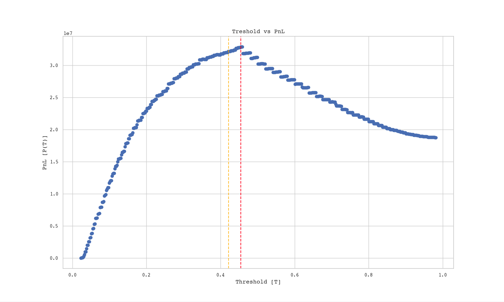

creditTest["loan_amnt"] * (1 + percentProfit * .01 * creditTest["loan_int_rate"])**10 - creditTest["loan_amnt"] (REPAID)
creditTest["loan_amnt"]* (1 + percentProfit * .01 * creditTest["loan_int_rate"])**3 - 1.7 * creditTest["loan_amnt"] (DEFAULT)Optimal Decision Making
Introduction
The primary way through which a bank makes money is a loan. The bank will lend you some sum of money which you then must pay back over the duration of the loan period, plus some interest. However, sometimes individuals may not be able to pay back their loan, causing them to default. Choosing who gets a loan is then a pivotal component of a bank’s profitability.
Today, we will try to automate this process using a scoring function with a minimum threshold. We will design a profit maximizing algorithm using a sampling based approach, analyze its performance, and investigate its demographic impact. Although our model is profitable, ultimately we find that thresholded linear scoring methods can struggle to attain a high degree of accuracy, and hence profitability. We also find that input features to the model can result in a vicious cycle of discrimination.
Data Analysis
We begin by taking a look at the data. First, let’s see what type of people are defaulting on their loans. While there are many features in the data frame that we might use to extrapolate on demographic information, there are three of interest. First, is loan intent, which is subdivided into Venture, Education, Medical, Home Improvement, Personal, and Debt Consolidation.
Loan Intent by Loan Status
Running a chi square test on the data returns Chi Square Statistic of approximately 368 with confidence value approaching 0. Clearly, whether or not someone defaults on their loans impacts the distribution of loan intent. However, a quick look at the charts reveals that the per-category difference is plus/minus a few percent. For our purposes, this does not indicate a clear bias, and we may confirm this in the correlation matrix: Indeed, the correlation between loan status and loan intent is .09. However, this information will be useful when assessing algorithm performance.
Next, we’ll take a look at loan amount subdivided by defaults. This will be particularly useful when assessing algorithm profitability.
A quick glance at the histogram shows that amount seems to have a negligible impact on defaults. Again, we may confirm this in the correlation matrix: loan amount has a .1 positive correlation with defaults. Finally, let’s look at home ownership. This is subdivided into those with mortgages, full home ownership, renters, and another category.
Interestingly, Renters comprise about 73% of individuals who defaulted on their loans but only 44% of those who repay them. We also see that, combined, home owners and individuals with mortgages make up about 26% of individuals who default, but 55% of individuals who repay their loans. We’ll also run a Chi Square Test on this feature, which results in a Chi-square statistic of approximately 1294 with confidence 2.913582391497053e-280! This makes qualitative sense: Individuals that own property are more likely to own assets, and be able to leverage said assets (home, financial, or otherwise) to repay loans. Homeownership also has a positive .22 correlation with loan status.
Feature Selection and Model Training
There are two clear candidate features to train on the model: Loan Percent of Income and Default on File. If one takes out a loan that is a greater percent of yearly income, it can be hard for them to pay it back along with other expenses. Moreover, if one defaults on their loan for some reason, we can assume that they are likely to do it again in the future. These features have positive correlation with loan status of .38 and .14 respectively.
From our initial exploration, we also found that home ownership impacts loan repayment. How does it stack up against the loan’s percent of an individual’s income? For convenience analysis, call a loan amount that is greater than 50% of one’s income “high risk” and the converse “low risk”. We can then subdivide our dataset into high risk loans and low risk, and look at the frequency of homeownership type in each.


Homeownership Breakdown For Repaid and Defaulted Loans
We see that renters make up a larger portion of high risk loans. This observation lends some insight to our initial finding: Perhaps renters may also be more likely to default on their loans since they are more likely to take out loans that are a higher percent of their income.
For our model, we use logistic regression, and we’ll train on the features discussed (.e.g Loan Percent Income, Default on File, and Homeownership Type). This yields an accuracy of 84% on the testing data–well within industry standards and acceptable for a simple regression model.
Profit Optmization
This is where the fun begins. First, let’s define a simple profit model for the bank. If an individual is able to repay their loan, let’s assume they did so over a 10 year period. On the other hand, if an individual defaults on their loan, we’ll assume that this occurred after a 3 year period. We’ll also assume that the bank’s operating cost is 75% of the loan profit, to add some spice to our data (we don’t want to make things too easy). This leads to the following equations. Let \(R\) be the value of a repaid loan, \(D\) the value of a defaulted loan, \(P\) the principle, and \(I\) the decimal interest rate. Then we have
\[ R = P \cdot (1 + I)^{10} - P \] \[D = P \cdot (1 + I)^3 - P\]
We’ll use these equations to create a profit and loss column – denoted PnL –in both our training and testing data. We can do this as follows:
Next, we’ll define a theoretical portfolio of loans to benchmark our algorithm’s performance. We do this by adding a loan to our portfolio in the testing set if and only if the Profit and Loss is positive. The sum of these loans is the maximum possible profit the bank can make. We can find this as follows:
theoreticalPNL = creditTest.loc[creditTest['PnL'] > 0, 'PnL'].sum()Now we need to find our threshold. Rather than use the actual weights from the model, a more elegant solution is to simply look at the probability score the regression assigns to each entry. We can add this column to both the training and test set:
credit["probability_score"] = LR.predict_proba(credit[interestingFeatures])[:, 1]
creditTest["probability_score"] = LR.predict_proba(creditTest[interestingFeatures])[:, 1]With the stage set, we can now design a thresholding algorithm. Ideally, we would like to transform this to a a calc I optimization problem where we have profit \(P\) as a function of the threshold \(T\). To do this, we’ll discretize \(T\)’s domain by some constant \(\Delta\). For each \(T\) value, we lend money if and only if the probability score is less than the threshold. We’ll calculate PnL for the loans made, and record it as a function of \(T\).
There are two problems with this approach. First, is time complexity. If \(D\) is the length of the data frame and \(\Delta\) the discretization constant, This algorithm runs in \(O(D \cdot \Delta)\). While I can run this code on my 2016 macbook in under minutes, for larger datasets with more complex calculations, This is bad practice. A more pressing issue is overfitting. By taking the optima of a single sample (e.g. the training data), we may maximize for the sample but not for potential data in the population (e.g. the training set).
To remedy these issues, we’ll take \(n\) sample of size \(k\), for each of which we will record the \(T\) value that maximizes profit. We then define a new statistic, call it \(T^*\), which is the mean of the sample maximizes (Thanks central limit theorem!). Notice that \(n \cdot k < D \Longrightarrow n \cdot k \cdot \Delta < D \cdot \Delta\), we can theoretically accomplish this more quickly then the aforementioned method. This method is also quite empirically accurate at threshold determination for \(n,k\) small. This is accomplished with the following functions:
def sampleMaxProfit(credit, n, k, scoreRange):
#samples size n from df credit.
#tests tresholds across
T = scoreRange[0]
maxTuple = [0, 0]
sample = credit.sample(n)
delta_T = (abs(scoreRange[1] - scoreRange[0]))/k
while T < scoreRange[1]: #can we do this without a loop?
PnL = sample.loc[sample['probability_score'] <= T, 'PnL'].sum()
if (PnL > maxTuple[0]):
maxTuple = [PnL, T]
T += delta_T
return maxTuple[1]
def optimalProfitScore(credit, iterations, n, k):
#Finds treshold score T that optmizes profit
testResult = []
scoreRange = [credit["probability_score"].min(), credit["probability_score"].max()]
for i in range(0, iterations):
testResult.append(sampleMaxProfit(credit, n, k, scoreRange))
npTestResult = np.array(testResult)
return np.mean(npTestResult)This produces the following result on the training set:

Notice that our method (in orange) under estimates the optimal threshold value. This is because there is bias associated with our estimator. We can remedy this by multiplying by a proportionality constant. This works out to be about \(1.05\). The resulting curve now fits the training data better.
The threshold value that maximizes profit is 0.455 for both the training (right) and testing (left) set. Running the algorithm with 200 trials with sample size of 100 – which is less than the length of the data set at 22,000 – we receive a threshold of 0.445.
Evaluation - Bank
Time to put our top hats on. First, for the features that we selected, we will see if the sampling method was able to obtain the optimal threshold.

Indeed, we see that we were able to correctly identify the optimal sampling threshold. Next we’ll comparing the results of the algorithm against the theoretical loan portfolio. Our model has an accuracy of around 84%. The theoretical PnL is $12634399.24, the Model PnL is $7476722.014, and the Thresholded PnL is $7850920.35. Here Model PnL is the profit and loss if we use the model’s threshold. The Thresholded PnL is the profit and loss if we use our threshold. Using the thresholded PnL produces a 5% increase in profitability. However, both predictive methods capture just north of 60% of potential profits. While profit is not a linear function of accuracy, if we assigned loan amounts reflective of the population to the 80% of the data we predicted correctly, we might expect it to be closer to 80% of theoretical profits. This observation suggests two, not-necessarily-mutually-exclusive possibilities. First, the algorithm is not giving loans to high value loans. This would mean that we are leaving gainz on the table. Second, the algorithm is giving high value loans to people who are defaulting, which would put a downward pressure on profit. Let’s investigate.
First, we’ll partition the data set into individuals selected for a loan and individuals whose loan request is rejected. Call these categories Algorithm-Select and Algorithm-Reject respectively. First, we consider defaults.


Loan Defaults for Alorithm Selections and Rejections
Of those individuals who defaulted on their loans, the average loss for Algorithm-Select is $-5179. For the same default population, The average loss for Algorithm-Reject is $-8795. We also see that the loss histogram left-skewed for the Algorithm-Select, whereas it is centered farther form 0 for Algorithm-Reject. This suggests that the algorithm, on average, the Algorithm is doing a good job of not losing money via defaults.
We now consider repayments.


Loan Repayments for Alorithm Selections and Rejections
Again, of those individuals who repaid their loans, the average profit for Algorithm-Select is $2713. However the average profit in the Algorithm-Reject group is 5780. We see that the histogram for the Algorithm-Select group is right skewed, whereas the histogram for Algorithm-Reject has a mound in $4000 - $6000 dollar range. The algorithm is not extending loans to potentially profitable individuals. Recall that one of the features we trained the model on was loan_percent income. While this was a good predictor of loan defaults, it (unsurprisingly) also has a positive correlation with loan amount for both default and repay groups:

This can make it difficult for our algorithm to correctly appraise high value loans leading to unrealized gains. The average profit for the training set was $1,630 per borrower, compared to $1,575 per borrower on the testing set. This small difference lends credence to the idea that our model is having trouble distinguishing profitable individuals from unprofitable ones. In that sense, this is a question of model selection rather than optimization. Given the overlapping nature of the features in the data set, and the fact that we are working with a linear model, it is unlikely that a better feature set exists. Considering our algorithm is profitable, I would say that it receives a satisfactory grade from the bank.
Evaluation - Demographic Impact
We’ll now investigate the impact the model has on potential borrowers. We’ll use the same features we discussed at the beginning. First, let’s look at loan intent breakdown.
Across all loan intent types, we see that selection percent is just north of 80. Although there is likely a statistically significant difference among intent groups, it is not dramatic enough to suggest a high degree of harm. This is good, since it means that individuals seeking loans for important things like education or medical expenses will not be discriminated against. We might also examine age:
Again, all age brackets have just north of 80% selection. The major exception is the 65+ group, which has a selection rate just under 60%. This suggests that our algorithm is biased against older individuals, likely because they have lower incomes and a higher likelihood to default on loans relative to the population at large. Finally, we might consider Home Ownership Type, as this was an input feature to our model.
Homeownership Type for Algorithm Selections and Rejections
We see that renters compose of 45.8% of Individuals seleclted for a loan, but 84.9% of individuals whose loan application was rejected. Individuals with mortgages or who own homes make up about half of all loan selections, and around 14% of all loan rejections. If we make the same chart on the testing data, but instead look at historic defaults and repayments, we see that renters make up about 73% of individuals who default on their loans. Homeowners and individuals mortgages make up about a quarter of loan defaults. Clearly, the algorithm we designed has made it harder for renters to get loans, thereby exacerbating existing inequality.
Moreover, looking at the loan percent income by selection type used in the analysis for the bank, we see that our algorithm tends to select Individuals where loans are a lower portion of income. Commodities like healthcare and education tend to have a fixed, absolute cost regardless of economic background. Hence, this can make it harder for less affluent individuals to achieve wellbeing and economic advancement. This is confirmed looking at the mean income which is $70074 and $42644 for select and rejection groups respectively. Perhaps even more paradoxically, if homeownership / mortgage is a critical component in receiving a loan, how can we expect renters to own homes if they cannot receive a loan to buy one in the first place?
Given this information, we might think that profitability is at odds with social responsibility (i.e. equality in loan extension). The synthesis there is notice that the bank left some profit on the table–some of which could be gained by lending to a more diverse group with respect to ownership type. Perhaps we need more features that partition the dataset, or a better model through which the data can be trained on. Or perhaps we should not be doing machine learning here at all. Maybe numbers will never represent abstract notions of trustworthiness and interpersonal relations. A question for another time (or blog post?).
Reflection
On a technical level, one of the most important things that I learned is that we don’t need a high number of features to develop a relatively accurate model. In this case, as I experimented with adding features, model accuracy surprisingly decreased. I also learned (unknowingly) how to bootstrap a statistical distribution - pretty neat!
On a more serious note, we might pose the following question: Considering that people seeking loans for medical expense have high rates of default, is it fair that it is more difficult for them to obtain access to credit? This is an important question, and I wanted to include it outside the official body of the blog post given the rhetorical shift. Of course, this question gets at one of the central inquiries of philosophy: What is the definition of fairness? I am not a philosopher, so I will not attempt to answer it. However, this definitely feels unfair, and I think we can lend some credence to that intuition. Money is transitory and a social construct. Your life is not. It seems strange that as a society we permit suffering and even death simply because some individuals don’t have enough colorful paper. Until we culturally shift the definition of freedom from unrestricted action to the capabilities one has to act, this will continue to be a problem.
Code Base
Utility Functions
import numpy as np
import pandas as pd
import matplotlib.pyplot as plt
pd.set_option('future.no_silent_downcasting', True)
def loadData(train_url, fileName):
#loads training data as pickle object in local dir
csv = fileName + ".pkl"
try:
df = pd.read_pickle(csv)
except FileNotFoundError:
print("Bootstrapping...")
df = pd.read_csv(train_url)
df.to_pickle(csv)
return df
def clean(credit):
#converts categoricals to numerics and drops NA
ownershipMapping = {"MORTGAGE": 0, "OWN": 1, "RENT": 2, "OTHER": 3, "Unknown": -1}
defaultMapping = {"N": 0, "Y": 1, "Unknown": -1}
intentMapping = {"VENTURE": 0, "EDUCATION": 1, "MEDICAL": 2, "HOMEIMPROVEMENT": 3, "PERSONAL": 4, "DEBTCONSOLIDATION" : 5, "Unknown": -1}
gradeMapping = {'B':1, 'C': 2, 'A':0, 'D':3, 'E':4, 'F':4, 'G':5}
credit["person_home_ownership"] = credit["person_home_ownership"] = credit["person_home_ownership"].replace(ownershipMapping).ffill()
credit["cb_person_default_on_file"] = credit["cb_person_default_on_file"] = credit["cb_person_default_on_file"].replace(defaultMapping).ffill()
credit["loan_intent"] = credit["loan_intent"] = credit["loan_intent"].replace(intentMapping).ffill()
credit["loan_grade"] = credit["loan_grade"] = credit["loan_grade"].replace(gradeMapping).ffill()
credit = credit.dropna()
return credit
def sampleMaxProfit(credit, n, k, scoreRange):
#samples size n from df credit.
#tests tresholds across
T = scoreRange[0]
maxTuple = [0, 0]
sample = credit.sample(n)
delta_T = (abs(scoreRange[1] - scoreRange[0]))/k
while T < scoreRange[1]: #can we do this without a loop?
PnL = sample.loc[sample['probability_score'] <= T, 'PnL'].sum()
if (PnL > maxTuple[0]):
maxTuple = [PnL, T]
T += delta_T
return maxTuple[1]
def optimalProfitScore(credit, iterations, n, k):
#Finds treshold score T that optmizes profit
testResult = []
scoreRange = [credit["probability_score"].min(), credit["probability_score"].max()]
for i in range(0, iterations): # can we do this without a loop??
testResult.append(sampleMaxProfit(credit, n, k, scoreRange))
npTestResult = np.array(testResult)
return 1.06 * np.mean(npTestResult)
def generateSampleGraph(df, n, k, t_star):
#initialize
scoreRange = [df["probability_score"].min(), df["probability_score"].max()]
t_values = []
PnL_values = []
T = scoreRange[0]
sample = df
delta_T = (abs(scoreRange[1] - scoreRange[0]))/k
tMax = [0, 0] #[T, P(T)]
#collect data
while T < scoreRange[1]: #can we do this without a loop?
PnL = sample.loc[sample['probability_score'] < T, 'PnL'].sum()
t_values.append(T)
PnL_values.append(PnL)
if PnL > tMax[1]:
tMax = [T, PnL]
T += delta_T
print("Maximum T: " + str(tMax[0]))
print("T*: " + str(t_star))
#make graph
plt.scatter(t_values, PnL_values)
#plot red line
vertical_line_x = tMax[0]
if (t_star > 0):
plt.axvline(x=t_star, color='orange', linestyle='--', alpha = 0.7)
# Plot the vertical line
plt.axvline(x=vertical_line_x, color='red', linestyle='--', alpha = 0.7)
# Add labels and title and make pretty
plt.xlabel('Threshold [T]', font = "Courier")
plt.ylabel('PnL [P(T)]', font = "Courier")
plt.title('Treshold vs PnL', font = "Courier")
plt.xticks(fontname='Courier', fontsize=10) # Change font to Courier
plt.yticks(fontname='Courier', fontsize=10)
plt.show()Data Visualization and Model
import utility
import pandas as pd
import seaborn as sns
import scipy.stats as stats
import matplotlib.pyplot as plt
from sklearn.metrics import accuracy_score
from sklearn.linear_model import LogisticRegression
from sklearn.model_selection import train_test_split
DELTA_T = 0.5
URL_TRAIN = "https://raw.githubusercontent.com/PhilChodrow/ml-notes/main/data/credit-risk/train.csv"
URL_TEST = "https://raw.githubusercontent.com/PhilChodrow/ml-notes/main/data/credit-risk/test.csv"
TRAIN_FILE_NAME = "creditTrainingData"
TEST_FILE_NAME = "creditTestingData"
credit = utility.loadData(URL_TRAIN, TRAIN_FILE_NAME)
creditTest = utility.loadData(URL_TEST, TEST_FILE_NAME)
credit = utility.clean(credit)
creditTest = utility.clean(creditTest)
#DATA VISUALIATION OF METRICS OF INTERESTS
interestingFeatures = ["loan_percent_income", "cb_person_default_on_file", "person_home_ownership"]
#interestingFeatures = ["cb_person_default_on_file", "person_home_ownership", "loan_grade"]
sns.pairplot(credit.select_dtypes(include=['int', 'float']), hue = "loan_status", kind='reg', height = 1, aspect = 1)
plt.legend().remove()
plt.show()
correlation_matrix = credit.select_dtypes(include=['int', 'float']).corr()
correlation_matrix = credit.corr()
plt.show()
# #Plot the correlation matrix as a heatmap
plt.figure(figsize=(8, 6))
sns.heatmap(correlation_matrix, annot=True, cmap='coolwarm', fmt=".2f", annot_kws={"size": 10})
plt.title('Correlation Matrix')
plt.show()
#high percent income group by HOME_OWNERSHIP
num_bins = 6
print("here")
hist_data = []
ownershipMapping = {0: "MORTGAGE", 1: "OWN", 2: "RENT", 3: "OTHER", -1 : "Unknown"}
colors = ["#82C272", "#00A88F", "#0087AC", "#005FAA"]
creditTemp = credit[credit["loan_percent_income"] <= .5]
unique_categories = creditTemp["person_home_ownership"].unique()
# Loop through each category value
for category_value in unique_categories:
# Filter DataFrame for the current category
category_data = creditTemp[creditTemp["person_home_ownership"] == category_value]['loan_percent_income']
# Append the data to the list
hist_data.append(category_data)
plt.hist(hist_data, bins=num_bins, stacked=True, label=unique_categories, color = colors)
# Add labels, title, and make pretty
plt.xlabel("Loan Percent of Income", font="Courier")
plt.ylabel("Number of Borrowers by Home Ownership Type", font="Courier")
plt.title("Loan Percent of Income by Homeownership", font="Courier")
legend_labels = [ownershipMapping[numericCode] for numericCode in unique_categories]
plt.legend(labels=legend_labels)
plt.xticks(fontname='Courier', fontsize=10) # Change font to Courier
plt.yticks(fontname='Courier', fontsize=10)
# Show plot
plt.show()
statusMapping = {0: "Repaid", 1: "Defaulted"}
#Loan Default Status by Loan Amounts
num_bins = 6
hist_data = []
colors = ["#82C272", "#00A88F"]#"#0087AC"]# "#005FAA"]
creditTemp = credit
unique_categories = creditTemp["loan_status"].unique()
# Loop through each category value
for category_value in unique_categories:
# Filter DataFrame for the current category
category_data = creditTemp[creditTemp["loan_status"] == category_value]['loan_amnt']
# Append the data to the list
hist_data.append(category_data)
plt.hist(hist_data, bins=num_bins, stacked=True, label=unique_categories, color = colors)
# Add labels, title, and make pretty
plt.xlabel("Loan Amount ($)", font="Courier")
plt.ylabel("Frequency", font="Courier")
plt.title("Loan Defaults and Repayments by Amount", font="Courier")
legend_labels = [statusMapping[numericCode] for numericCode in unique_categories]
plt.legend(labels=legend_labels)
plt.xticks(fontname='Courier', fontsize=10) # Change font to Courier
plt.yticks(fontname='Courier', fontsize=10)
# Show plot
plt.show()
#PIE #1
statusMapping = {0: "Repaid", 1: "Defaulted"}
#Plotting Loan Status by Intent
colors = ["green", "#82C272", "#00A88F", "#0087AC", "#005FAA", "#323B81"]
intentMapping = {0: "Venture", 1: "Education", 2: "Medical", 3: "Home Improvement", 4: "Personal", 5: "Debt Consolidation", -1: "Unknown"}
loan_status_groups = credit["loan_status"].unique()
for status in loan_status_groups:
group_data = credit[credit["loan_status"] == status]
category_counts = group_data["loan_intent"].value_counts().sort_index()
labels = [intentMapping.get(x) for x in category_counts.index]
sizes = category_counts.values
plt.figure()
pie = plt.pie(sizes, labels = labels, autopct="%1.1f%%", startangle = 140, colors = colors)
plt.title("Intent Breakdown for " + str(statusMapping[status]) + " Loans", fontname = "Courier", fontsize = 14)
#make pretty
for text in pie[1]:
text.set_fontname("Courier")
plt.show()
#statistical test
contingency_table = pd.crosstab(credit["loan_status"], credit["loan_intent"])
chi2_stat, p_val, dof, expected = stats.chi2_contingency(contingency_table)
print("Chi-square statistic", chi2_stat)
print("P-value", p_val)
#PIE #2
#Plotting Loan Status by Ownership tyoe
colors = ["green", "#82C272", "#00A88F", "#0087AC", "#005FAA", "#323B81"]
ownershipMapping = {0: "MORTGAGE", 1: "OWN", 2: "RENT", 3: "OTHER", -1 : "Unknown"}
loan_status_groups = credit["loan_status"].unique()
loan_status_groups = loan_status_groups
for status in loan_status_groups:
group_data = credit[credit["loan_status"] == status]
category_counts = group_data["person_home_ownership"].value_counts().sort_index()
labels = [ownershipMapping.get(x) for x in category_counts.index]
sizes = category_counts.values
plt.figure()
pie = plt.pie(sizes, labels = labels, autopct="%1.1f%%", startangle = 140, colors = colors)
plt.title("Home Ownership Breakdown for " + str(statusMapping[status]) + " Loans", font = "Courier")
#make pretty
for text in pie[1]:
text.set_fontname("Courier")
plt.show()
statusMapping = {0: "Repaid", 1: "Defaulted"}
#statistical test
contingency_table = pd.crosstab(credit["loan_status"], credit["person_home_ownership"])
chi2_stat, p_val, dof, expected = stats.chi2_contingency(contingency_table)
print("Chi-square statistic", chi2_stat)
print("P-value", p_val)
# #statistical test for HOME OWNERSHIP VS LOAN AMOUNT
# x = credit[credit["loan_percent_income"] <= .5]
# contingency_table = pd.crosstab(credit[credit["loan_percent_income"] > .5], credit["person_home_ownership"])
# chi2_stat, p_val, dof, expected = stats.chi2_contingency(contingency_table)
# print("Chi-square statistic", chi2_stat)
# print("P-value", p_val)
#PLOTTING LOAN AMOUNT VS INCOME
# custom_colors = {0: "#82C272", 1 :"#0087AC"}
# sns.set(style = 'whitegrid', font = "Courier")
# for key, value in custom_colors.items():
# custom_colors[key] = value + '80'
# sns.scatterplot(x = "person_income", y = "loan_amnt", hue = "loan_status", palette = custom_colors, data = credit)
# plt.xlim(-1000000, 1000000)
# plt.title("Loan Amount vs. Income")
# plt.xlabel("Loan Amount")
# plt.ylabel("Person Income")
# plt.show()
print("fitting model")
LR = LogisticRegression()
LR.fit(credit[interestingFeatures], credit["loan_status"])
#scoring model
pred = LR.predict(creditTest[interestingFeatures])
credit["probability_score"] = LR.predict_proba(credit[interestingFeatures])[:, 1]
creditTest["probability_score"] = LR.predict_proba(creditTest[interestingFeatures])[:, 1]
accuracy = accuracy_score(pred, creditTest["loan_status"])
#creating score columns
# credit["score"] = weights[0][0] * credit["loan_percent_income"] + weights[0][1] * credit["cb_person_default_on_file"] + weights[0][2] * credit["person_home_ownership"]
# creditTest["score"] = weights[0][0] * creditTest["loan_percent_income"] + weights[0][1] * creditTest["cb_person_default_on_file"] + weights[0][2] * creditTest["person_home_ownership"]
#creating PnL columns
percentProfit = .25
credit.loc[credit["loan_status"] == 0, "PnL"] = credit["loan_amnt"] * (1 + percentProfit * .01 * credit["loan_int_rate"])**10 - credit["loan_amnt"]
credit.loc[credit["loan_status"] == 1, "PnL"] = credit["loan_amnt"]* (1 + percentProfit * .01 *credit["loan_int_rate"])**3 - 1.7 * credit["loan_amnt"]
creditTest["loan_status_pred"] = pred
creditTest.loc[creditTest["loan_status"] == 0, "PnL"] = creditTest["loan_amnt"] * (1 + percentProfit * .01 * creditTest["loan_int_rate"])**10 - creditTest["loan_amnt"]
creditTest.loc[creditTest["loan_status"] == 1, "PnL"] = creditTest["loan_amnt"]* (1 + percentProfit * .01 * creditTest["loan_int_rate"])**3 - 1.7 * creditTest["loan_amnt"]
# print(credit.loc[credit["loan_status"] == 0, "probability_score"].mean())
# print(credit.loc[credit["loan_status"] == 1, "probability_score"].mean())
BankPnL = creditTest.loc[creditTest['loan_status'] == 0, 'PnL'].mean()
machinePnL = creditTest.loc[creditTest["loan_status_pred"] == 0, 'PnL'].mean()
T = utility.optimalProfitScore(credit, 200, 100, 50)
tresholdPnL = creditTest.loc[creditTest["probability_score"] < T, "PnL"].mean()
theoreticalPnL = creditTest.loc[creditTest["PnL"] > 0, "PnL"].mean()
creditTest["ALGO_DECISION"] = creditTest["probability_score"] < T
#BANK INVESTIGATION
#analyzing loan default
#means
meanPopDeafultValue = creditTest[creditTest["loan_status"] == 1]["PnL"].mean()
meanAlgoSelectDefaultValue = creditTest[(creditTest["ALGO_DECISION"] == True) & (creditTest["loan_status"] == 1)]["PnL"].mean()
meanAlgoRejectDefaultValue = creditTest[(creditTest["ALGO_DECISION"] == False) & (creditTest["loan_status"] == 1)]["PnL"].mean()
#histograms
#ALGO accept
plt.hist(creditTest[(creditTest["ALGO_DECISION"] == True) & (creditTest["loan_status"] == 1)]["PnL"], bins=6, color='green', edgecolor='black')
plt.xlabel('Loan Profit', font = "Courier")
plt.ylabel('Frequency', font = "Courier")
plt.title('Loan Profitability Distriubtion for Algorithm Selections', font = "Courier")
plt.xticks(fontname='Courier', fontsize=10) # Change font to Courier
plt.yticks(fontname='Courier', fontsize=10)
plt.grid(True)
plt.show()
#ALGO reject
plt.hist(creditTest[(creditTest["ALGO_DECISION"] == False) & (creditTest["loan_status"] == 1)]["PnL"], bins=6, color='green', edgecolor='black')
plt.xlabel('Loan Profit', font = "Courier")
plt.ylabel('Frequency', font = "Courier")
plt.title('Loan Profitability Distriubtion for Algorithm Rejections', font = "Courier")
plt.xticks(fontname='Courier', fontsize=10) # Change font to Courier
plt.yticks(fontname='Courier', fontsize=10)
plt.grid(True)
plt.show()
#print outs
print("DEFAULT")
print("Population Mean: " + str(meanPopDeafultValue))
print("Algorithm SELECT Mean: " + str(meanAlgoSelectDefaultValue))
print("Algorithm REJECT Mean " + str(meanAlgoRejectDefaultValue))
#alayzing loan repayment
meanPopRepayValue = creditTest[creditTest["loan_status"] == 0]["PnL"].sum()
meanAlgoSelectRepayValue = creditTest[(creditTest["ALGO_DECISION"] == True) & (creditTest["loan_status"] == 0)]["PnL"].mean()
meanAlgoRejectRepayValue = creditTest[(creditTest["ALGO_DECISION"] == False) & (creditTest["loan_status"] == 0)]["PnL"].mean()
#print outs
print("REPAID")
print("Population Mean: " + str(meanPopRepayValue))
print("Algorithm SELECT Mean: " + str(meanAlgoSelectRepayValue))
print("Algorithm REJECT Mean " + str(meanAlgoRejectRepayValue))
#histograms
#ALGO accept
plt.hist(creditTest[(creditTest["ALGO_DECISION"] == True) & (creditTest["loan_status"] == 0)]["PnL"], bins=6, color='green', edgecolor='black')
plt.xlabel('Loan Profit', font = "Courier")
plt.ylabel('Frequency', font = "Courier")
plt.title('Loan Profitability Distriubtion for Algorithm Selections', font = "Courier")
plt.xticks(fontname='Courier', fontsize=10) # Change font to Courier
plt.yticks(fontname='Courier', fontsize=10)
plt.grid(True)
plt.show()
#ALGO reject
plt.hist(creditTest[(creditTest["ALGO_DECISION"] == False) & (creditTest["loan_status"] == 0)]["PnL"], bins=6, color='green', edgecolor='black')
plt.xlabel('Loan Profit', font = "Courier")
plt.ylabel('Frequency', font = "Courier")
plt.title('Loan Profitability Distriubtion for Algorithm Rejections', font = "Courier")
plt.xticks(fontname='Courier', fontsize=10) # Change font to Courier
plt.yticks(fontname='Courier', fontsize=10)
plt.grid(True)
plt.show()
#Printing Loan Percent of Income by Algorithm Decision Type
statusMapping = {True:"Algorithm Select", False:"Algorithm Reject"}
for algo_status in creditTest["ALGO_DECISION"].unique():
plt.hist(creditTest[creditTest["ALGO_DECISION"] == algo_status]["loan_percent_income"], bins=6, color='skyblue', edgecolor='black')
plt.xlabel('Loan Percent of Income', font = "Courier")
plt.ylabel('Frequency', font = "Courier")
plt.title("Loan Percent Income for " + statusMapping[algo_status], font = "Courier")
plt.xticks(fontname='Courier', fontsize=10) # Change font to Courier
plt.yticks(fontname='Courier', fontsize=10)
plt.grid(True)
plt.show()
custom_colors = {0: "#82C272", 1 :"#0087AC"}
sns.set(style = 'whitegrid', font = "Courier")
for key, value in custom_colors.items():
custom_colors[key] = value + '80'
sns.scatterplot(x = "loan_amnt", y = "loan_percent_income", hue = "loan_status", palette = custom_colors, data = creditTest)
plt.title("Loan Amount vs. Loan Percent Income")
plt.xlabel("Loan Amount")
plt.ylabel("Percent of Borrower Income")
plt.show()
#generates profit curves and prints out useful metrics
utility.generateSampleGraph(credit, 100, 500, T)
utility.generateSampleGraph(creditTest, 100, 500, T)
print("Model Accuracy: %" + str(accuracy))
print("Bank PnL: $" + str(BankPnL))
#print("Model PnL: $" + str(machinePnL))
print("Tresholded PnL: $" + str(tresholdPnL))
print("Loss: " + str(tresholdPnL/BankPnL))
#DEMOGRAPHIC INVESTIGATION
statusMapping = {True:"Algorithm Select", False:"Algorithm Reject"}
#Plotting Loan Status by Intent
colors = ["green", "#82C272", "#00A88F", "#0087AC", "#005FAA", "#323B81"]
intentMapping = {0: "Venture", 1: "Education", 2: "Medical", 3: "Home Improvement", 4: "Personal", 5: "Debt Consolidation", -1: "Unknown"}
loan_status_groups = creditTest["ALGO_DECISION"].unique()
print(loan_status_groups)
for status in loan_status_groups:
if status < 0:
break
group_data = creditTest[creditTest["ALGO_DECISION"] == status]
category_counts = group_data["loan_intent"].value_counts()
labels = [intentMapping.get(x) for x in category_counts.index]
sizes = category_counts.values
plt.figure()
pie = plt.pie(sizes, labels = labels, autopct="%1.1f%%", startangle = 140, colors = colors)
plt.title("Intent Breakdown for " + str(statusMapping[status]) + " Loans", fontname = "Courier", fontsize = 14)
#make pretty
for text in pie[1]:
text.set_fontname("Courier")
plt.show()
#PIE #3
#Plotting Loan Status by Ownership tyoe
colors = [ "#82C272", "#00A88F", "#0087AC", "#005FAA", "#323B81"]
ownershipMapping = {0: "MORTGAGE", 1: "OWN", 2: "RENT", 3: "OTHER", -1 : "Unknown"}
loan_status_groups = creditTest["ALGO_DECISION"].unique()
for status in loan_status_groups:
if status < 0:
break
group_data = creditTest[creditTest["ALGO_DECISION"] == status]
category_counts = group_data["person_home_ownership"].value_counts().sort_index()
labels = [ownershipMapping.get(x) for x in category_counts.index]
sizes = category_counts.values
plt.figure()
pie = plt.pie(sizes, labels = labels, autopct="%1.1f%%", startangle = 140, colors = colors)
plt.title("Home Ownership Breakdown for " + str(statusMapping[status]) + " Loans", font = "Courier")
#make pretty
for text in pie[1]:
text.set_fontname("Courier")
plt.show()
#PIE #4
#Plotting Loan Status by Ownership tyoe
statusMapping = {0: "Repaid", 1: "Defaulted"}
colors = ["green", "#82C272", "#00A88F", "#0087AC", "#005FAA", "#323B81"]
ownershipMapping = {0: "MORTGAGE", 1: "OWN", 2: "RENT", 3: "OTHER", -1 : "Unknown"}
loan_status_groups = creditTest["loan_status"].unique()
for status in loan_status_groups:
group_data = creditTest[creditTest["loan_status"] == status]
category_counts = group_data["person_home_ownership"].value_counts().sort_index()
labels = [ownershipMapping.get(x) for x in category_counts.index]
sizes = category_counts.values
plt.figure()
pie = plt.pie(sizes, labels = labels, autopct="%1.1f%%", startangle = 140, colors = colors)
plt.title("Home Ownership Breakdown for " + str(statusMapping[status]) + " Loans", font = "Courier")
#make pretty
for text in pie[1]:
text.set_fontname("Courier")
plt.show()
#Plotting Age
age_bins = [18, 25, 35, 45, 55, 65, float("inf")]
age_labels = ["18-24", "25-34", "35-44", "45-54", "55-64", "65+"]
creditTest["ALGO_DECISION"] = creditTest["ALGO_DECISION"].astype(int)
creditTest["person_age"] = pd.cut(creditTest["person_age"], bins = age_bins, labels = age_labels, right= False)
percentage_by_age_group = creditTest.groupby("person_age")["ALGO_DECISION"].mean() * 100
percentage_by_age_group.plot(kind = "bar", color = "blue")
plt.title("Loan Selection Percent by Age Group")
plt.xlabel("Age Group")
plt.ylabel("Selection Percent")
plt.xticks(rotation = 45)
plt.ylim(0, 100)
plt.tight_layout()
plt.show()
#Plotting by Intent
intentMapping = {0: "Venture", 1: "Education", 2: "Medical", 3: "Home Improvement", 4: "Personal", 5: "Debt Consolidation", -1: "Unknown"}
creditTest["loan_intent"] = creditTest["loan_intent"].map(intentMapping)
creditTest["ALGO_DECISION"] = creditTest["ALGO_DECISION"].astype(int)
percentage_by_age_group = creditTest.groupby("loan_intent")["ALGO_DECISION"].mean() * 100
percentage_by_age_group.plot(kind = "bar", color = "blue")
plt.title("Selection Percent by Loan Intent")
plt.xlabel("Loan Intent")
plt.ylabel("Selection Percent")
plt.xticks(rotation = 45)
plt.ylim(0, 100)
plt.tight_layout()
plt.show()